00이 매뉴얼에 대하여
N값 지내력 환산 시스템은 지반조사 보고서의 표준관입시험 N값 표를 붙여 넣으면 N값을 보정하고, 사질토는 내부마찰각 φ · 점성토는 점착력 cu 로 환산해 Meyerhof 극한지지력과 침하 기준 지지력을 구한 뒤, KDS 41 19 00 식 (4.2-1)과 표 4.2-1 에 맞춰 허용지지력(지내력)을 정리하는 웹도구입니다.
| 항목 | 내용 |
|---|---|
| 대상 프로그램 | N값 지내력 환산 시스템 MANMIN Ver-1.0(v1.0.1) |
| 접속 주소 | manminkim-eng.github.io/Soil-Bearing-Capacity |
| 매뉴얼 판 | Ver-1.0 (화면 표기와 같은 판 번호, 초판) · 2026-11-09 · 작성 김만민 건축사(㈜대성건축사사무소) |
| 내려받기 | PDF(A4) · 환산 시스템 열기 |
| 근거 | KDS 41 19 00 건축물 기초구조 설계기준 (2022. 10. 11.) · KDS 11 50 05 얕은기초 설계기준(일반설계법) (2025. 12. 24.) — 공식 원문 대조(2026-11-09) |
| 범위 | 얕은기초(독립 · 줄 · 전면)의 지표 부근 흙 지반 허용지지력 참고 추정 — 암반 지지력 · 압밀침하 · 층상지반 · 말뚝 · 내진 지반분류는 따로 검토합니다 |
01한눈에 보기
설치 없이 브라우저에서 바로 열리는 단일 페이지(PWA)입니다. 입력값은 브라우저 안에서만 계산하고 서버로 보내지 않습니다. 입력하면 0.3초 뒤 자동으로 다시 계산합니다.
1-1. 화면 구성
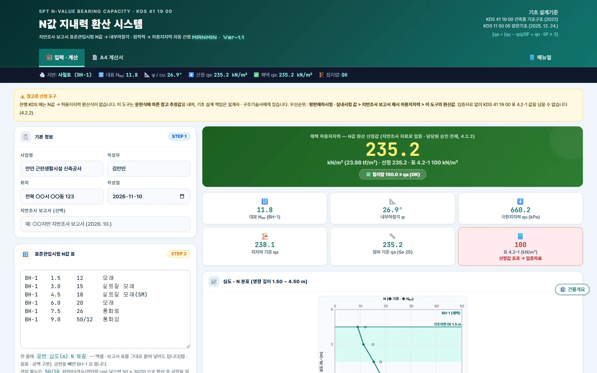
123456- 1탭 — 입력 · 계산 / A4 계산서
- 2📘 매뉴얼
- 3요약 바
- 4참고용 안내
- 5입력(STEP 1 ~ 5)
- 6결과
1-2. 계산 흐름
| 단계 | 내용 |
|---|---|
| 1. 읽기 | N값 표(공번 · 심도 · N · 토질) — 관입 불능 50/x 환산 · 토질 이름 / USCS 기호 인식 |
| 2. 보정 | N₆₀ = N × ER/60 × CR (상한 50) · 유효상재압 σv′ · (N₁)₆₀ = CN·N₆₀ |
| 3. 영향 깊이 | 기초 저면 Df ~ Df + B(2 − 0.5B/L) 의 N값 평균(또는 최솟값)을 대표 N 으로 |
| 4. 환산 | 사질토 φ(Dunham 등 4식) · 점성토 cu = 6.25·N₆₀ · 암은 환산하지 않음 |
| 5. 지지력 | Meyerhof 극한지지력 qu → 식 (4.2-1) qa = (qu − qo)/SF + qo |
| 6. 침하 | 사질토 Meyerhof · Bowles 식(Se 25 mm) → qa = min(지지력, 침하) |
| 7. 채택 | 시추공별 최솟값 → 평판재하 > 암 표 값 > 입증자료 유무에 따라 산정값 또는 표 4.2-1 상한 |
021분 따라하기
예제 ① — 만민 근린생활시설 신축공사 독립기초(입력값은 예시).
- ① 기본 정보사업명 · 작성자 · 위치 · 작성일, 지반조사 보고서 이름(선택).
- ② N값 표보고서의 시추주상도 N값을 「공번 심도 N 토질」로 붙여 넣기 — 여기서는 「예제 ① 사질토」 단추.
- ③ 기초 · 지하수위독립기초 정방형 B = 2.0 m · Df = 1.5 m · 지하수위 GL−10 m · 설계 접지압 150 kN/㎡.
- ④ 결과대표 N₆₀ 11.8 → φ 26.9° → 지지력 기준 238.1 · 침하 기준 235.2 → 채택 qa 235.2 kN/㎡ · 접지압 OK.
- ⑤ 입증자료 확인STEP 5 「입증 · 승인」을 끄면 표 4.2-1 모래 100 kN/㎡ 가 상한 → 접지압 150 은 NG.
- ⑥ A4 계산서「📄 A4 계산서」 탭 → 「인쇄 / PDF 저장」 또는 「JPG 저장」.
03화면별 기능
3-1. 머리 · 매뉴얼
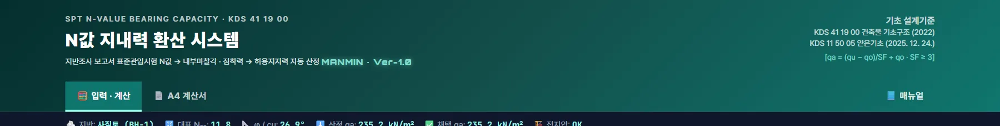
1234- 1도구 이름 · Ver-1.0
- 2KDS 41 19 00 · KDS 11 50 05
- 3탭
- 4📘 매뉴얼 — 탭 막대 끝
탭 막대 오른쪽 끝의 「📘 매뉴얼」은 이 문서를 새 창으로 엽니다(온라인 전용). 오른쪽 근거 블록은 적용 기준과 식 (4.2-1)입니다.
3-2. STEP 1 기본 정보
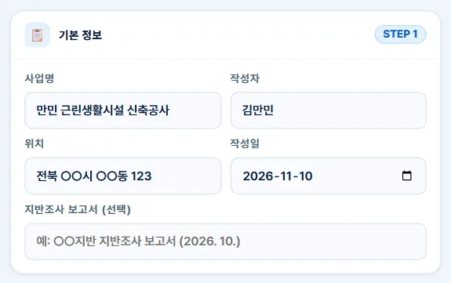
12345- 1사업명
- 2작성자
- 3위치
- 4작성일
- 5보고서 이름(계산서에 표기)
| 칸 | 쓰임 |
|---|---|
| 사업명 · 작성자 · 위치 | A4 계산서 머리 — 「🏢 건물개요」로 다른 도구와 공유 |
| 작성일 | 계산서 날짜 |
| 지반조사 보고서 | 보고서 이름 · 날짜 — 계산서 「자료」 줄에 표기 |
3-3. STEP 2 N값 표
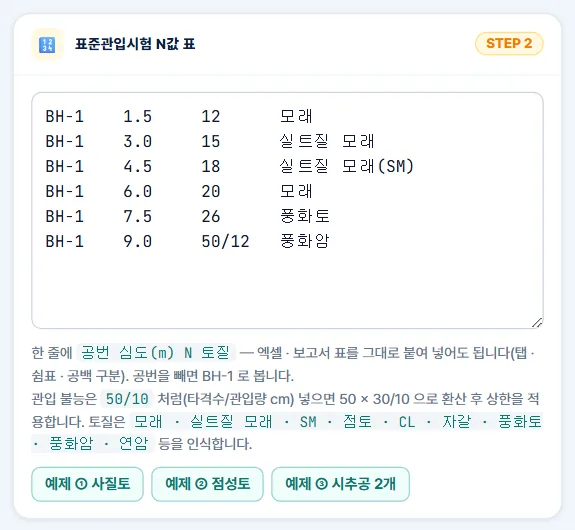
123- 1공번 · 심도 · N · 토질 붙여 넣기
- 2관입 불능 50/x · 토질 인식
- 3예제 ① ② ③
| 항목 | 규칙 |
|---|---|
| 형식 | 한 줄에 공번 · 심도(m) · N · 토질 — 탭 · 쉼표 · 공백 구분, 엑셀 표를 그대로 붙여 넣어도 됨 |
| 공번 | 빼면 BH-1 — 공번이 여러 개면 시추공별로 계산해 가장 작은 값을 채택 |
| 관입 불능 | 50/12 → 50 × 30/12 = 125 로 환산 후 N 상한(50) 적용 |
| 토질 | 모래 · 실트질 모래 · 자갈 · 점토 · 실트 · 풍화토 · 풍화암 · 연암 · 경암, USCS 기호(SM · CL …) — 괄호 안 기호도 인식 |
| 풍화토 | 사질토로 계산(KDS 41 19 00 표 4.2-1 에는 풍화토 항목이 없음 — 모래 100 적용) |
3-4. STEP 3 기초 · 지하수위
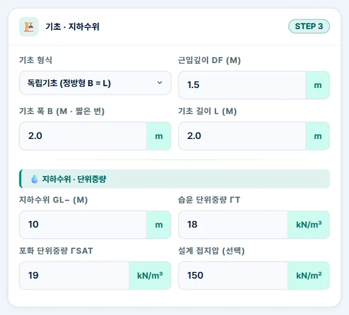
12345678- 1기초 형식
- 2근입깊이 Df
- 3폭 B(짧은 변)
- 4길이 L
- 5지하수위
- 6γt
- 7γsat
- 8설계 접지압 — 판정
| 칸 | 쓰임 |
|---|---|
| 기초 형식 | 독립(정방형 · 장방형) · 연속(줄기초, L = ∞) · 전면 — 형상계수 · 영향 깊이에 반영 |
| Df · B · L | 근입깊이 · 짧은 변 · 긴 변 — B · Df 0.3 m 미만이면 경고(KDS 41 19 00 4.4.4) |
| 지하수위 | 유효상재압 · 지지력 γ 항 · 침하식 Cw 에 반영 — 보고서의 측정 수위(우기 고려) |
| γt · γsat | 습윤 · 포화 단위중량 — 보고서 값, 없으면 18 · 19 kN/m³ |
| 설계 접지압 | 구조계산의 기초 접지압 — 넣으면 채택 qa 와 비교해 OK / NG |
3-5. STEP 4 보정 · 환산식
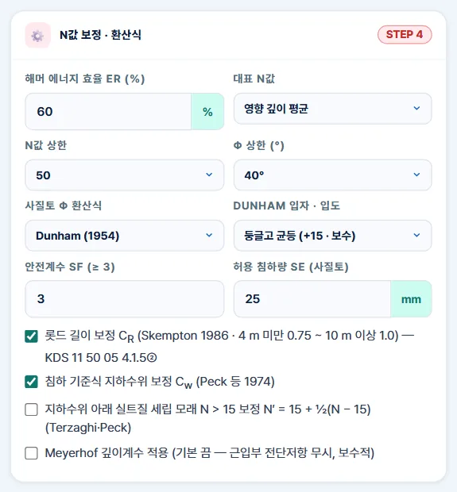
123456789101112- 1ER (기본 60 %)
- 2평균 / 최솟값
- 3N 상한 50
- 4φ 상한 40°
- 5φ 환산식
- 6Dunham 계수
- 7SF ≥ 3
- 8Se 25 mm
- 9CR 보정
- 10Cw 보정
- 11세립 모래 보정
- 12깊이계수
| 칸 | 쓰임 |
|---|---|
| ER | 해머 에너지 효율 — 보고서에 측정값이 있으면 입력, 없으면 60 % (KDS 11 50 05 4.1.5②) |
| 대표 N값 | 영향 깊이 평균(기본) 또는 최솟값 |
| N · φ 상한 | N 50 · φ 40° (보수) — 60 · 45° 선택 가능 |
| φ 환산식 | Dunham(기본) · 오사키 · Peck · Hatanaka·Uchida — 결과에서 4식 비교 |
| SF · Se | 안전계수 3 이상(식 4.2-1) · 허용 침하량 25 mm(사질토 침하식) |
| 보정 선택 | CR 롯드 길이(켬) · Cw 지하수위(켬) · 세립 모래(끔) · 깊이계수(끔 — 보수) |
3-6. STEP 5 시험값 · 입증자료
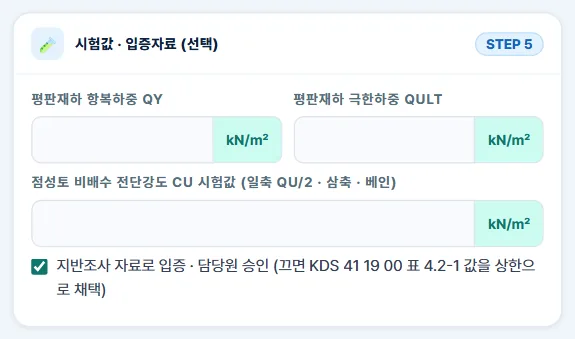
1234- 1평판재하 qy
- 2평판재하 qult
- 3cu 시험값
- 4입증자료 · 승인
| 칸 | 쓰임 |
|---|---|
| 평판재하 qy · qult | KS F 2444 시험의 항복 · 극한하중 — 넣으면 min(qy/2, qult/3) 을 최우선 채택 |
| cu 시험값 | 일축(qu/2) · 삼축 · 베인 — 넣으면 N 환산 cu 대신 사용 |
| 입증 · 승인 | 켬: 산정값 채택(4.2.2 입증 전제) · 끔: 표 4.2-1 값을 상한으로 채택 |
3-7. 결과 요약
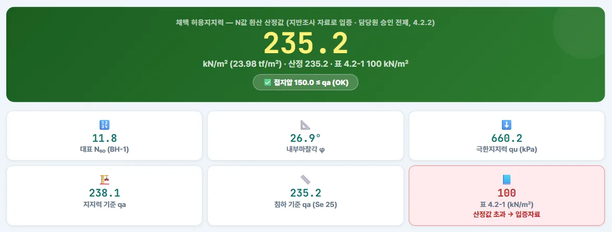
1234567- 1채택 qa
- 2접지압 판정
- 3대표 N₆₀
- 4φ
- 5지지력 기준 qa
- 6침하 기준 qa
- 7표 4.2-1
위 상자는 채택 허용지지력과 그 근거(산정값 / 표 4.2-1 / 평판재하), tf/㎡ 환산, 접지압 판정입니다. 아래 여섯 칸은 대표 N₆₀ · φ(또는 cu) · 극한지지력 · 지지력 기준 qa · 침하 기준 qa · 표 4.2-1 값입니다. 예제 ①은 산정값 235.2 이 표 값 100 을 넘어 표 칸이 빨갛게 「입증자료」를 알립니다.
3-8. 심도 - N 분포 · φ 비교 · 보정표
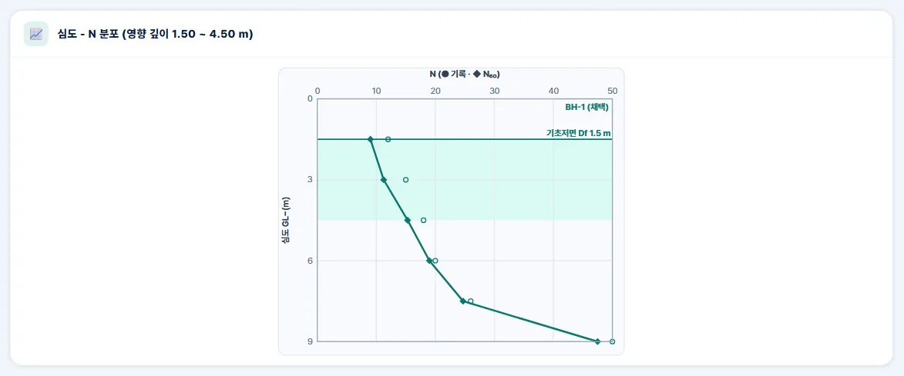
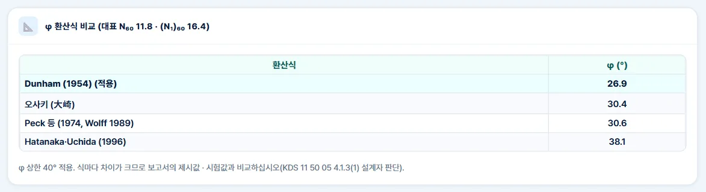
같은 N 이라도 식마다 φ 가 26.9° ~ 38.1° 로 차이가 큽니다. 보고서 제시값 · 시험값과 비교해 식을 고르십시오(KDS 11 50 05 4.1.3(1) 설계자 판단).
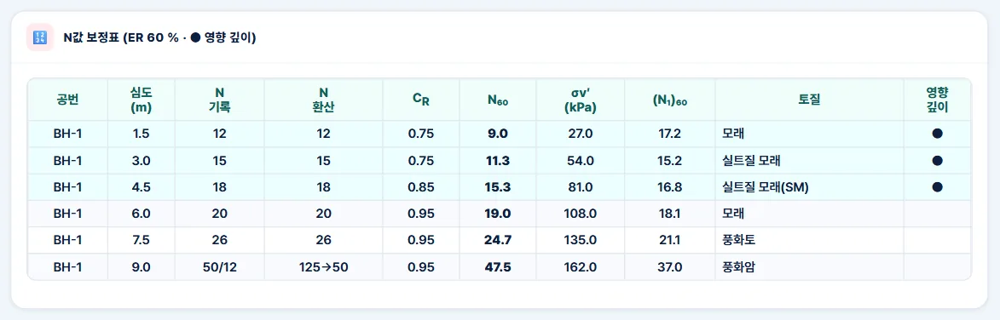
3-9. 사례 — 입증자료 없음
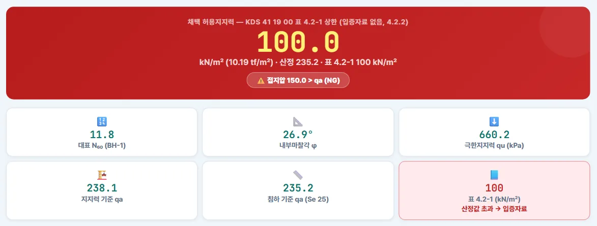
123- 1표 4.2-1 값 채택
- 2접지압 150 > 100 — NG
- 3표 4.2-1 모래 100
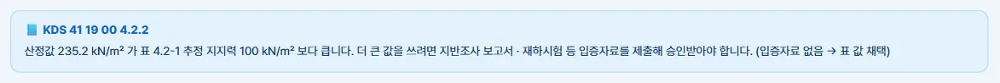
입증자료 없이는 표 4.2-1 값을 넘을 수 없습니다(4.2.2). 산정값이 235.2 이어도 채택은 모래 100 kN/㎡ 이고, 접지압 150 은 NG 입니다.
3-10. 사례 — 시추공 2개
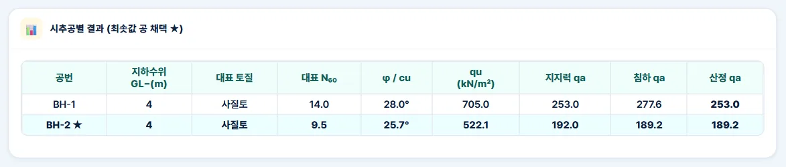
BH-1 253.0 · BH-2 189.2 kN/㎡ 중 작은 BH-2 값을 채택합니다. 시추공 사이 지층이 다르면 기초 위치별로 나눠 검토하십시오.
3-11. 사례 — 점성토 줄기초
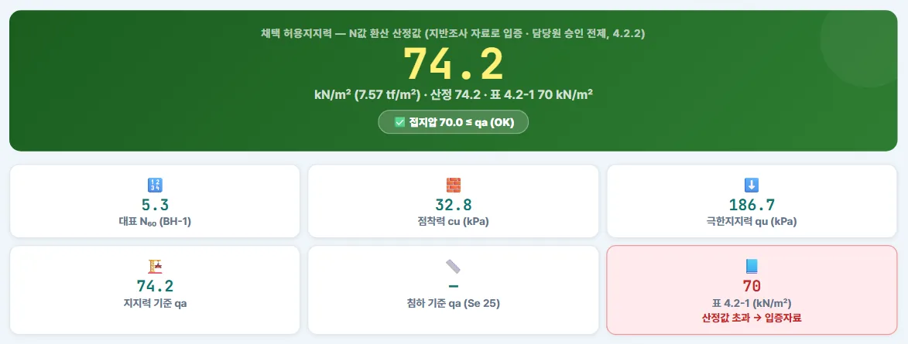
123- 1채택 qa
- 2점착력 cu
- 3침하 기준 — 점성토 없음
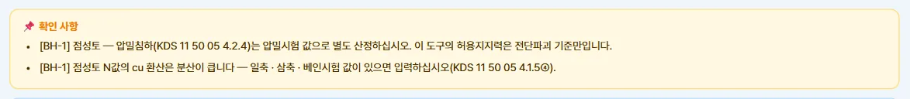
점성토는 φ = 0 으로 보고 cu = 6.25·N₆₀ = 32.8 kPa 로 Meyerhof 지지력을 구합니다. 침하 기준식은 사질토 전용이라 점성토는 압밀침하를 따로 검토해야 합니다(KDS 11 50 05 4.2.4).
3-12. 사례 — 평판재하시험
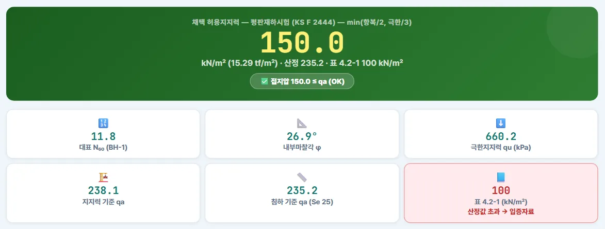
12- 1평판재하시험 채택
- 2min(qy/2, qult/3)
평판재하시험 값이 있으면 min(300/2, 500/3) = 150 kN/㎡ 를 최우선 채택합니다. 재하판 크기 효과(기초 폭이 크면 영향 깊이가 깊어짐)는 따로 확인하십시오.
3-13. A4 계산서
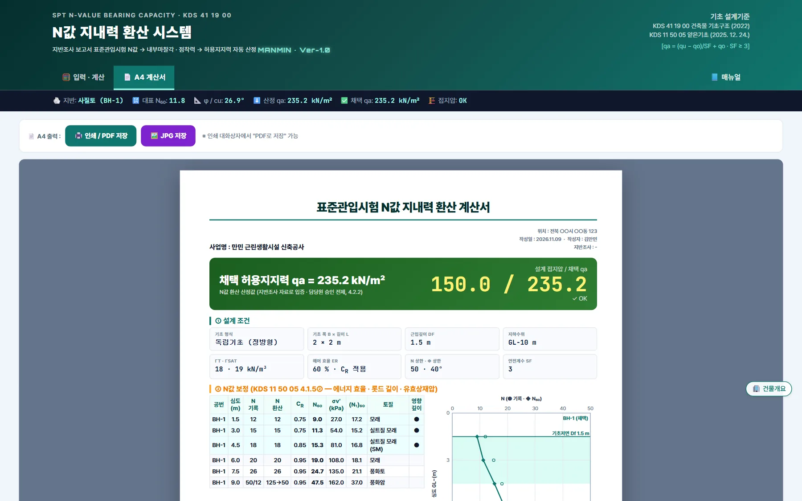
123- 1인쇄 · PDF
- 2JPG 저장
- 3A4 계산서
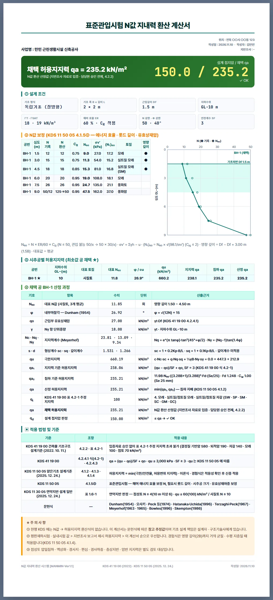
| 구역 | 내용 |
|---|---|
| ① | 기본 정보 · 자료 |
| ② | 입력 조건 — 기초 · 지하수위 · 보정 · 환산식 |
| ③ | 시추공별 결과 · 심도 - N 그래프 |
| ④ | 산출 근거 — 기호 · 항목 · 수치 · 단위 · 산출근거 |
| ⑤ | 채택 · 판정 |
| 적용 기준 | KDS 조항 표 · 주의사항 |
인쇄는 A4 2쪽 · 단색 인쇄 모듈 · 쪽 번호 · PDF 이름 「N값지내력환산계산서_사업명_날짜」.
3-14. 도움말
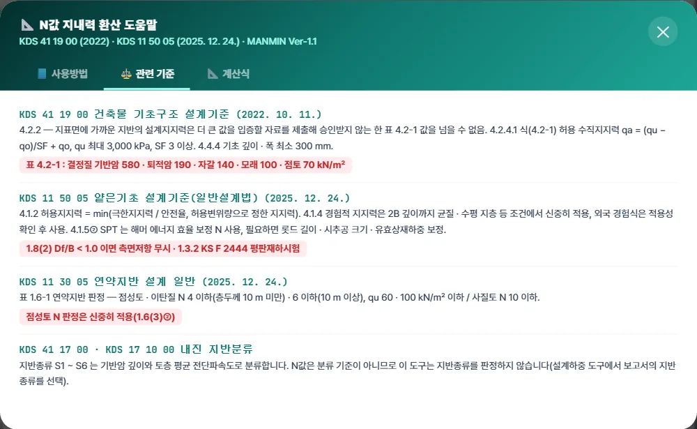
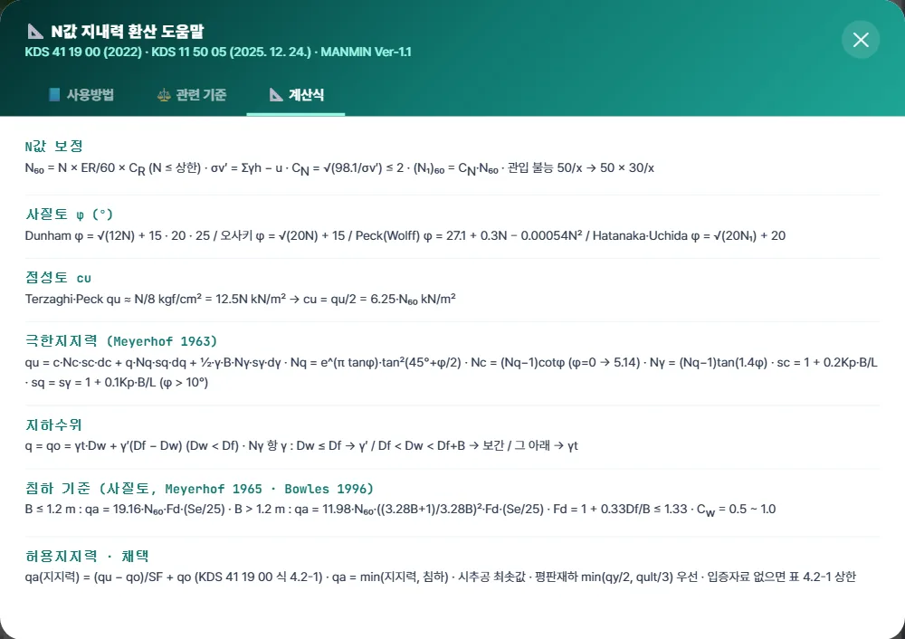
오른쪽 아래 「설계기준」 버튼으로 엽니다.
3-15. 휴대전화 화면
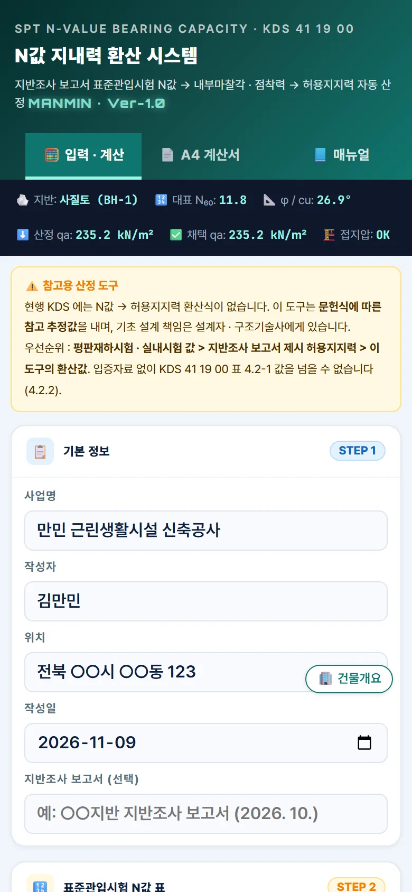
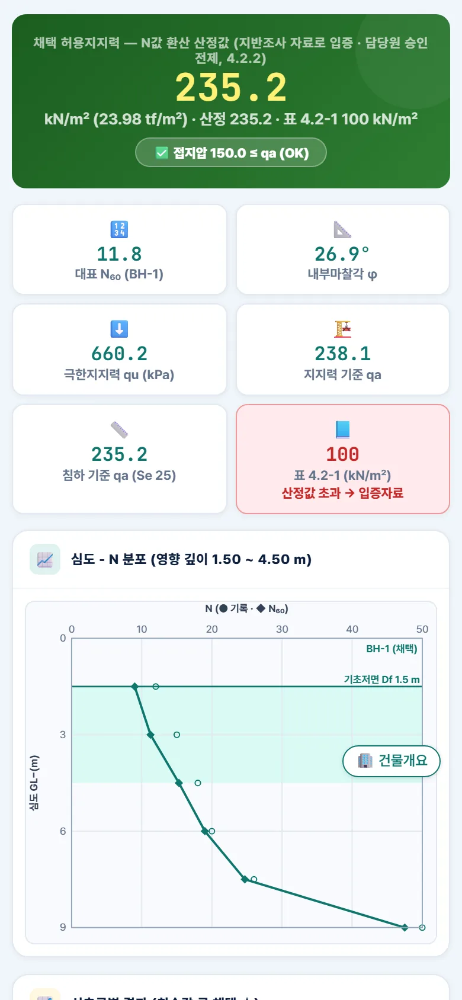
3-16. 건물개요 저장·불러오기
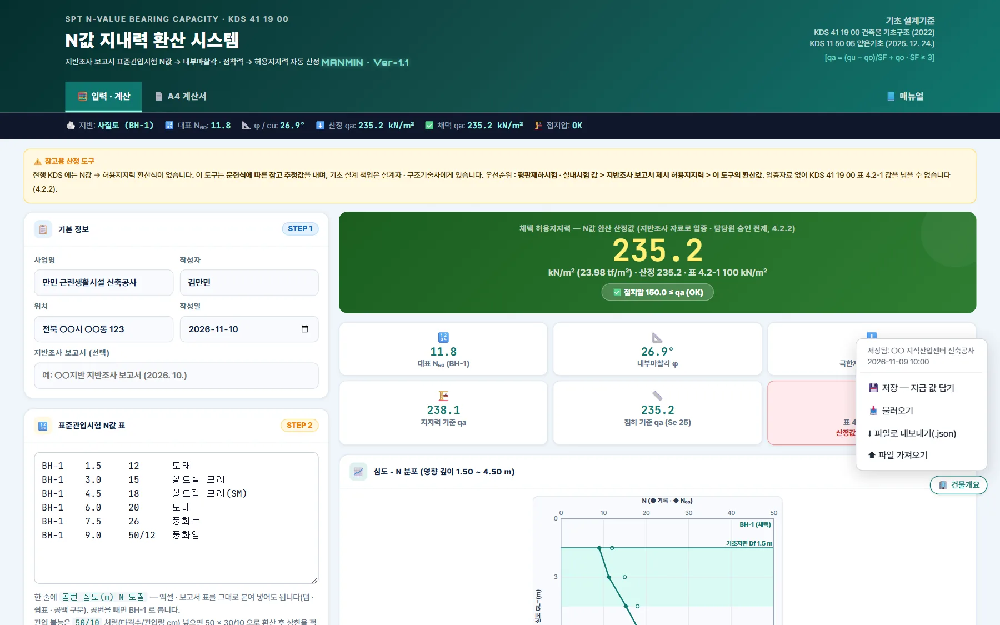
12345- 1「🏢 건물개요」 단추(오른쪽 아래)
- 2저장 — 지금 값 담기
- 3불러오기
- 4파일로 내보내기(.json)
- 5파일 가져오기
- 1체크한 항목만 채움(빈 칸은 체크된 채로)
- 2이미 입력된 칸 — 직접 체크해야 덮어씀
- 3채우기
화면 오른쪽 아래 「🏢 건물개요」 단추로 같은 현장의 표지 정보를 다른 MANMIN 도구와 나눠 씁니다. 이 도구에서 나눠 쓰는 칸은 사업명 · 위치 · 작성자입니다. 「저장」은 지금 값을 이 기기 브라우저에 담고(이 도구에 없는 항목은 저장돼 있던 값을 그대로 둠), 「불러오기」를 누르면 채울 값이 목록으로 먼저 나옵니다. 비어 있는 칸은 체크된 채로, 이미 입력된 칸은 체크가 꺼진 채로 나오므로 덮어쓸 항목만 직접 체크한 뒤 「채우기」를 누릅니다. PC와 태블릿 사이는 「파일로 내보내기(.json)」 → 「파일 가져오기」로 옮깁니다. 단추와 창은 인쇄 · PDF에 나오지 않습니다.
04기준 해설
4-1. 근거 체계
| 기준 | 이 도구에서 쓰는 조항 |
|---|---|
| KDS 41 19 00 건축물 기초구조 | 2022. 10. 11. — 표 4.2-1 추정 지지력 · 4.2.2 입증 · 4.2.4.1 식 (4.2-1) · 4.4.4 최소 크기 |
| KDS 11 50 05 얕은기초(일반설계법) | 2025. 12. 24. — 4.1.2 허용지지력 · 4.1.4 경험적 지지력 · 4.1.5② N값 에너지 보정 · 1.8(2) 측면저항 · 1.3.2 평판재하 KS F 2444 |
| KDS 11 30 05 연약지반 | 2025. 12. 24. — 표 1.6-1 연약지반 판정(점성토 N ≤ 4 · 6, 사질토 N ≤ 10) |
| 출처 | KDS 41 19 00 공식 원문(hwpx) · 국가건설기준센터 kcsc.re.kr 원문 대조(2026-11-09) |
4-2. 표 4.2-1 · 식 (4.2-1)
| 지반분류 (원문) | kN/㎡ | 도구 대응 |
|---|---|---|
| 1. 결정질 기반암 | 580 | 경암 |
| 2. 퇴적암 및 엽리성암 | 190 | 풍화암 · 연암 |
| 3. 모래질 자갈 / 자갈 (GW · GP) | 140 | 자갈 |
| 4. 모래 · 실트질 모래 · 점토질 모래 · 실트질 자갈 · 점토질 자갈 (SW · SP · SM · SC · GM · GC) | 100 | 모래 · 풍화토 |
| 5. 점토 · 모래질 점토 · 실트질 점토 · 점토질 실트 · 실트 · 모래질 실트 (CL · ML · MH · CH) | 70 | 점토 · 실트 |
KDS 41 19 00 표 4.2-1 수직 지지력 열 — 토질 대응(풍화토 → 4, 풍화암 · 연암 → 2)은 이 도구의 분류이며 기준 문구가 아닙니다. 4.2.2(2) 진흙 · 유기질 실트 · 유기질 점토 · 토탄 · 검증되지 않은 매립토는 입증자료 없이 추정 지지력을 쓸 수 없습니다.
4.2.2 — 지표면 부근 지반의 설계지지력은 더 큰 값을 입증하는 자료를 제출해 승인받지 않는 한 표 4.2-1 값을 넘을 수 없습니다. 4.2.4.1 — 극한지지력 qu 는 3,000 kPa 를 넘을 수 없습니다(원문 확인 — 제한은 극한값에 걸림).
4-3. N값 보정
KDS 11 50 05 4.1.5② — 표준관입시험 N값은 에너지 효율로 보정해 쓰고, 롯드 길이 · 시추공 지름 · 상재압 보정을 할 수 있습니다. 지하수위 아래 실트질 세립 모래는 N > 15 일 때 N′ = 15 + ½(N − 15) (Terzaghi·Peck, 선택).
4-4. φ · cu 환산
| 식 | 내용 | 비고 |
|---|---|---|
| Dunham (1954) | φ = √(12N) + 15 · 20 · 25 | 입자 · 입도에 따라 계수 — 기본 +15(보수) |
| 오사키 (大崎) | φ = √(20N) + 15 | 일본 건축 기준에서 널리 씀 |
| Peck 등 (1974) · Wolff | φ = 27.1 + 0.3N − 0.00054N² | 미국 문헌 |
| Hatanaka · Uchida (1996) | φ = √(20·(N₁)₆₀) + 20 | 상재압 보정 N 사용 — 큰 값이 나오기 쉬움 |
| 점성토 cu | cu = 6.25·N₆₀ kPa | Terzaghi·Peck qu ≈ N/8 kgf/㎠ — 분산이 커서 시험값 우선 |
KDS 11 50 05 4.1.4 — 경험식은 적용 조건(기초 폭 2B 깊이까지 균질 · 수평 지층 등)을 확인하고, 외국 식은 국내 지반 적용성을 확인한 뒤 씁니다.
4-5. 극한지지력 (Meyerhof 1963)
깊이계수 d 는 기본 끔(1.0)입니다 — KDS 11 50 05 1.8(2) 는 Df/B < 1.0 이면 근입부 측면저항을 무시하도록 합니다. 지하수위가 기초 저면 위면 q 와 γ 에 수중단위중량 γ′, 저면 아래 B 이내면 γ 를 보간합니다.
4-6. 침하 기준 허용지지력 (사질토)
KDS 11 50 05 4.1.2 — 허용지지력은 극한지지력을 안전율로 나눈 값과 허용변위량으로 정한 값 중 작은 값입니다. 예제 ①은 지지력 238.1 · 침하 235.2 → 235.2 kN/㎡.
4-7. 영향 깊이 · 대표 N
영향 깊이 안의 N₆₀ 평균(또는 최솟값)을 대표값으로 씁니다. 그 안에 사질토 · 점성토 · 암이 섞이면 층상지반 경고를 냅니다(KDS 11 50 05 4.1.3(4) — 층상 영향 별도 검토).
4-8. 채택 순서
| 순위 | 경우 | 채택값 |
|---|---|---|
| 1 | 평판재하시험 값 | min(qy/2, qult/3) — KS F 2444 |
| 2 | 암(풍화암 · 연암 · 경암) | N 환산 없이 표 4.2-1 값(퇴적암 190 · 기반암 580) — 암반 지지력은 KDS 11 50 05 4.1.6 |
| 3 | 흙 — 입증자료 있음 | 산정값(시추공별 최솟값) |
| 4 | 흙 — 입증자료 없음 | min(산정값, 표 4.2-1 값) |
4-9. 이 도구가 하지 않는 것
| 항목 | 안내 |
|---|---|
| 압밀침하 | 점성토 · 연약지반은 압밀시험 값으로 별도 산정(KDS 11 50 05 4.2.4) |
| 층상지반 | 두 층 이상 지지력 · 펀칭 파괴 — 별도 해석 |
| 암반 지지력 | 일축압축강도 · RQD · 불연속면으로 산정(4.1.6) |
| 내진 지반분류 | S1 ~ S6 는 기반암 깊이 · 전단파속도로 분류(KDS 41 17 00 · 17 10 00) — N값 기준이 아님 |
| 액상화 | 사질토 N ≤ 10 · 지하수위 얕음이면 액상화 평가 여부 확인 |
| 깊은기초 | 말뚝 지지력은 KDS 11 50 15 |
05실무 작업 방법
5-1. 검토 절차
- ① 보고서 확인지반조사 보고서에 허용지지력 제시값 · 평판재하 · 실내시험 값이 있으면 그것이 우선 — 이 도구는 대조 · 검산용.
- ② N값 입력기초 위치에 가까운 시추공의 N값 표를 붙여 넣고 토질 인식 결과(보정표)를 확인.
- ③ 기초 조건기초 형식 · B · L · Df · 지하수위(우기 최고 수위) 입력.
- ④ 결과 판단φ 4식 비교 · 지지력 / 침하 중 지배값 · 표 4.2-1 초과 여부 · 경고 확인.
- ⑤ 별도 검토점성토 압밀 · 층상 · 암반 · 액상화(4-9).
- ⑥ 기록A4 계산서를 구조계산서 · 검토 자료에 첨부, 채택값 근거(입증자료)를 함께 정리.
5-2. 문제 해결 · FAQ
| 증상 | 해결 |
|---|---|
| 보고서 값과 크게 달라요 | 보고서 제시값이 우선입니다. ER · 지하수위 · φ 식 · 영향 깊이를 보고서 가정과 맞춰 비교하십시오 |
| 토질이 다르게 인식돼요 | 보정표의 토질 열을 확인 — 「모래(SM)」처럼 이름과 USCS 기호를 함께 쓰면 정확합니다 |
| 풍화암인데 지지력이 190 이에요 | 암은 N 환산을 하지 않고 표 4.2-1 퇴적암 값을 씁니다 — 보고서의 암반 지지력을 확인하십시오 |
| 산정값보다 작은 값이 채택됐어요 | STEP 5 「입증 · 승인」이 꺼져 있으면 표 4.2-1 값이 상한입니다(4.2.2) |
| 50/10 을 넣었는데 N 이 50 이에요 | 50 × 30/10 = 150 으로 환산한 뒤 상한 50 을 적용합니다 |
| 화면이 예전 판이에요 | 새로 고침(Ctrl+F5) — 캐시 이름 sbc-v1.0.1 |
부록
A1. 버전 변경 내역
| 버전 | 내용 |
|---|---|
| Ver-1.0 · v1.0.1 (2026-11-09) | 탭 막대 「📘 매뉴얼」 단추 · 사용자 매뉴얼 신설 · sw sbc-v1.0.1 (계산 변경 없음) |
| Ver-1.0 · v1.0.0 (2026-11-09) | 신규 — KDS 41 19 00 (2022) 식 (4.2-1) · 표 4.2-1 · KDS 11 50 05 (2025. 12. 24.) 원문 대조 엔진 SBENG · 옹벽 v5.1.10 공통 틀(토목 #0f766e) · MM-PROJECT v1.2 · MM-PRINT v1.0 |
A2. 예제 입력값
| 예제 | N값 | 기초 · 지하수위 | 채택 qa (kN/㎡) |
|---|---|---|---|
| ① 사질토 | BH-1 1.5 ~ 9.0 m · N 12 · 15 · 18 · 20 · 26 · 50/12 | 정방형 B 2.0 · Df 1.5 · GL−10 | 235.2 (접지압 150 OK) |
| ① 입증 없음 | 예제 ① + 「입증 · 승인」 끔 | 같음 | 100 (NG) |
| ② 점성토 | BH-1 N 6 · 8 · 9 · 30 | 줄기초 B 1.2 · Df 1.0 · GL−1.5 | 74.2 (접지압 70 OK) |
| ③ 시추공 2개 | BH-1 · BH-2 각 4점 | 장방형 2.0 × 3.0 · Df 1.5 · GL−4.0 | 189.2 (BH-2) |
| 평판재하 | 예제 ① + qy 300 · qult 500 | 같음 | 150 |
A3. 용어
| 용어 | 뜻 |
|---|---|
| N값 | 표준관입시험(KS F 2307)에서 샘플러를 30 cm 관입시키는 타격 횟수 |
| N₆₀ | 해머 에너지 효율 60 % 로 보정한 N |
| (N₁)₆₀ | N₆₀ 를 유효상재압 100 kPa 기준으로 다시 보정한 값 |
| 허용지지력 qa | 극한지지력을 안전율로 나눈 값과 침하로 정한 값 중 작은 값 — 흔히 「지내력」 |
| 유효상재압 qo | 기초 저면 위 흙의 무게(지하수위 아래는 수중단위중량) |
| 영향 깊이 | 기초 하중이 지반에 주로 전달되는 깊이 — 이 도구는 B(2 − 0.5B/L) |